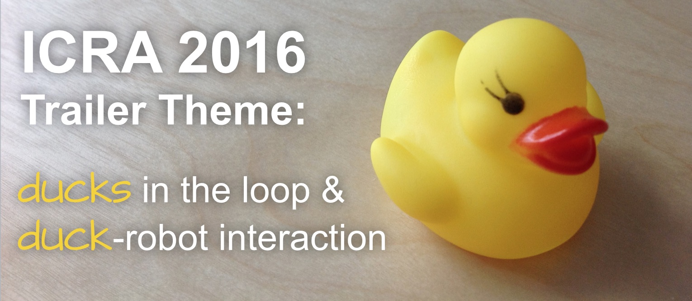

ICRA 2016
will have a trailer just like ICRA 2015 did.
The theme is
duckies in the loop &
duckie-robot interaction.
What this means that each clip will have to include a duckie,
more specifically the standard duckie. A thousand of duckies have been distributed at ICRA 2015.
If you missed that, you can request your duckie using
this form.
Timeline and important dates
- Sep 22 - We have a virtual duckie 3D model available below,
but we are looking for better versions. Please send us a better model if you have it
- Sep 28 - Last chance to get a duckie at IROS 2015, only by reservation.
Please send an email to ICRAducks@gmail.com to reserve yours.
-
Oct 15 Nov 1 - Trailer Submission Deadline
Duckie ambassadors
We are looking for help in distributing
the duckies via mail. To minimize mailing costs, we will do this hierarchically.
We are thus looking for "duckie ambassadors" for each country. They will receive many duckies from us, and will be responsible to mail them out to colleagues in their country.
(In many countries the postal service
allows to create shipping labels online, so the ambassadors just need to print a label and attach it to a box.)
List of the Duckie Ambassadors:
- The Honorable Duckie Ambassador to Japan, Dr. Wataru Takano
- The Honorable Duckie Ambassador to Korea, Dr. Jin-Woo Jung (정진우).
- The Honorable Duckie Ambassador to Zurich, Dr.
Saverio Bolognani.
- The Honorable Duckie Ambassador to the United States of America, Dr. John Leonard,
and the Respectable Posting Attachés, Dr. Liam Paull, Sudeep Pillai, and Ross Finman.
- The Honorable Duckie Ambassador to Germany, Dr. Gian Diego Tipaldi
- The Honorable Duckie Ambassador to Denmark, Dr. Mikkel Rath Pedersen
- The Honorable Duckie Ambassador to San Diego, Dr. Michael Tolley
- The Honorable Duckie Ambassador to Belgium, Dr. Mark Van Loock
- The Honorable Duckie Ambassador to France, Mr.
Shane Griffith.
- The Honorable Duckie Ambassador to the United Kingdom, Dr.
Hadi Heidari .
- The Honorable Duckie Ambassador to the continent of Africa, Mr. Dehann Fourie .
- The Honorable Duckie Ambassador to Italy, Mr. Valerio Varricchio
.
Duckies specifications
Precise specifications (including dimensions, mass, moments of inertia, etc.)
will be released soon. Refer to the video below for the approximate size.
This was in the final selection process where we had to choose
between two identical models of duck except for different squeakiness.
Duckies Meshes
These are the current meshes that we have available. We would love to have more accurate meshes.
Frequently Asked Questions
What is the point of having a duckie in the clips?
There are several goals:
- It makes it easy to tell the relative scale of the different robots.
- It will make the trailer look like a worldwide collaborative video.
- It opens up the possibilities of using interesting transition
effects during video editing.
I lost my duckie. Can I have another?
Should I get a duckie?
You need a
duckie if:
- You plan to submit a clip to the ICRA 2016 trailer; and
- The clip will include a physical robot (as opposed to simulations).
Is the duckie necessary for a trailer submission?
Yes, except extenuating circumstances.
Why squeaky duckies?
It's important for people who work in manipulation.
How many duckies should the video include?
At least 1.
Where should I place the duckie?
That is left to your creativity and imagination.
Should my robot interact with the duckie?
That's not necessary.
What if I only do simulations?
A 3D model of a virtual duckie
to put in your simulations will be provided shortly.
Does it have to be that duckie
or will any duckie suffice?
It will have to be exactly that duckie; or,
more precisely, it must have exactly the same proportions and textures.
DO NOT use non-standard duckies (examples in figure)

Can I customize the duckie?
No duckie customization is allowed.
You can certainly repair the duckie
if it is damaged in transit.
Should the duckie be included in the paper as well?
That is not necessary.
My robot is currently on Mars, where there are no duckies to
observe (that we know of). What should I do?
Clips involving planetary rovers are exempt from the duckie requirement.
Can I destroy the duckie during the clip?
We would rather not have the duckies
suffer unnecessary harm.
I have a clever interpretation of the rules that leads to a surprising/unexpected
use of the duckie. Can I go ahead with that?
Yes, as long as it respects
the spirit of the duckie.
You might want to
contact us just in case.
I want to respect the spirit of the duckie,
however, I have such a weird setup for which, even if I place
a duckie in the video it will not have
the desired effect. What can I do?
Please
contact us and we will be happy
to brainstorm alternative solutions with you.